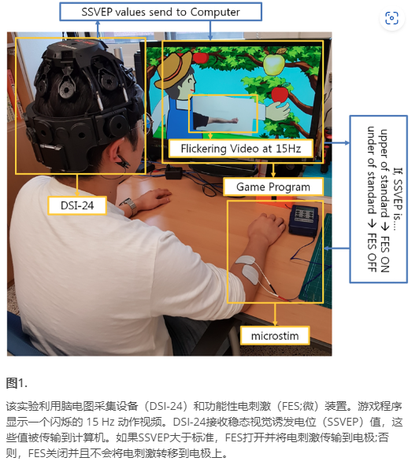
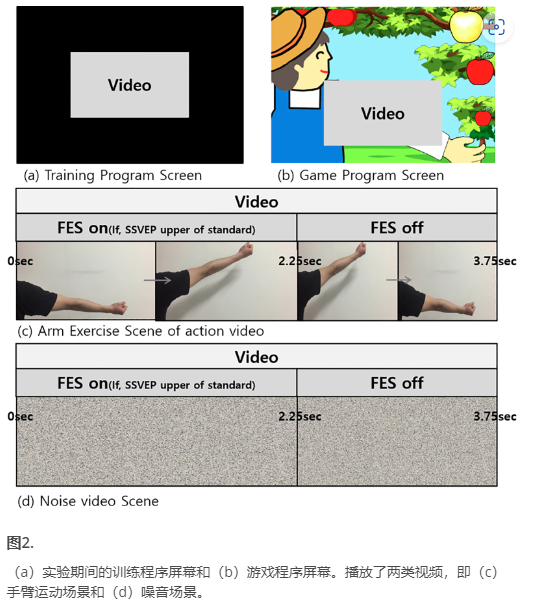
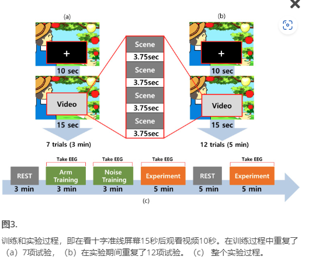

基于稳态视觉诱发电位触发脑机界面功能电刺激的闪烁动作视频的康复动作观察游戏开发
背景：
这项研究的重点是制定上肢康复计划。为此，设计了一种基于稳态视觉诱发电位（SSVEP）触发脑机接口（BCI）-功能电刺激（FES）的动作观察游戏，其中包含闪烁的动作视频。
脑卒中是神经系统功能障碍和身体活动受限的主要原因[1]。既往关于运动恢复的研究表明，恢复最快的时间发生在脑卒中后的最初几周[2]。一些临床实验表明，重复性康复锻炼，如“坐下并站起来坐在椅子上”和“用球进行手臂锻炼”对于脑卒中患者的运动学习和恢复至关重要[3,4,5]。 此外，康复治疗往往侧重于恢复失去的运动功能。然而，患有严重运动障碍的患者难以进行重复的康复锻炼。
基于镜像神经元系统（MNS）激活的治疗可以促进严重残疾患者的大脑可塑性[6,7,8,9]。 MNS是一种与理解和模仿他人行为的能力相关的神经机制[10,11,12,13,14]。 具体来说，当观察到一个动作时，镜像神经元激活似乎会诱导类似于运动皮层实际运动的反应[9,15]。MNS的激活表现为抑制感觉运动皮层中的Mu带（8至13Hz）[16,17,18,19,20,21]。Mu抑制是由感觉运动皮层中的细胞在动作观察，运动和成像过程中的不同步产生的[16,17,18,19,20]。因此，无法进行运动的患者可以通过观看动作视频来体验运动皮层的刺激并学习运动。
目的：
特别是，通过将动作观察范式与基于BCI的FES相结合，研究了游戏的协同效应。

方法：
BCI-FES系统在两种条件下进行了对比：闪烁的动作视频和闪烁的噪声视频。在这方面，招募了11名年龄在22-27岁之间的右撇子受试者。检查了对这两种情况的大脑激活反应的差异。


结果：
结果表明，T3和P3通道在8–13 Hz的动作视频中表现出比噪声视频更大的Mu抑制。此外，与噪声视频相比，T4、C4和P4通道显示动作的高β（21-30 Hz）增强。最后，与噪声视频相比，T4表示动作视频的低β（14-20 Hz）被抑制。
结论：
基于闪烁动作视频的BCI-FES系统比基于闪烁噪声的系统对皮质激活产生了更大的协同效应。